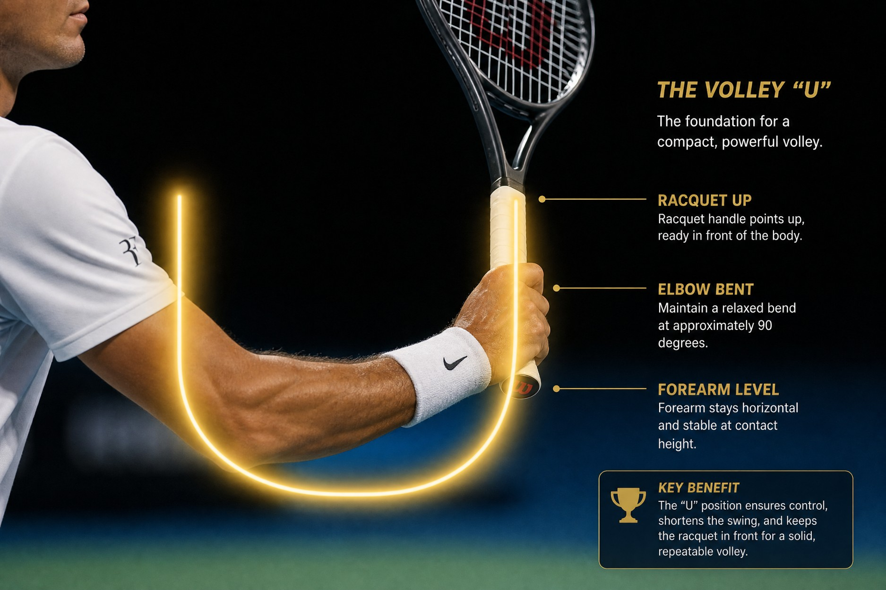
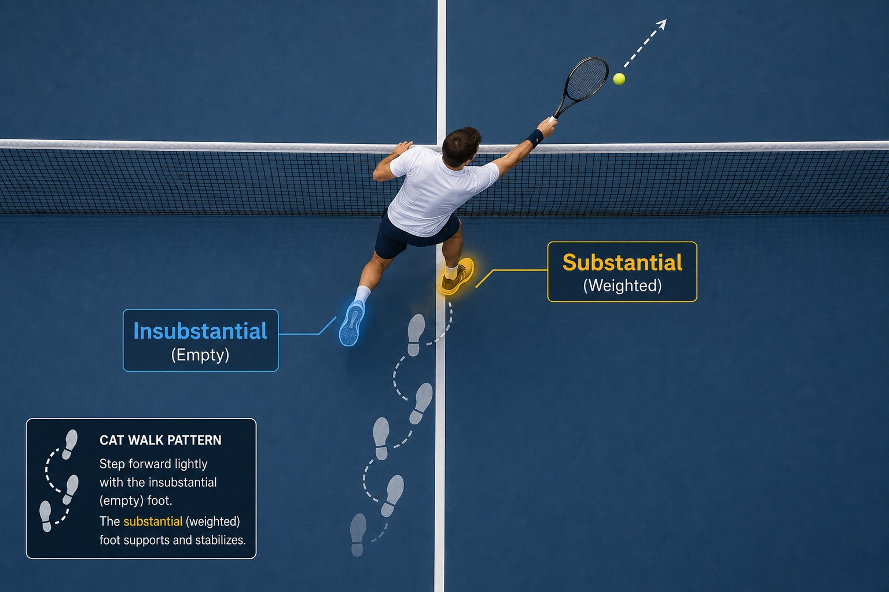
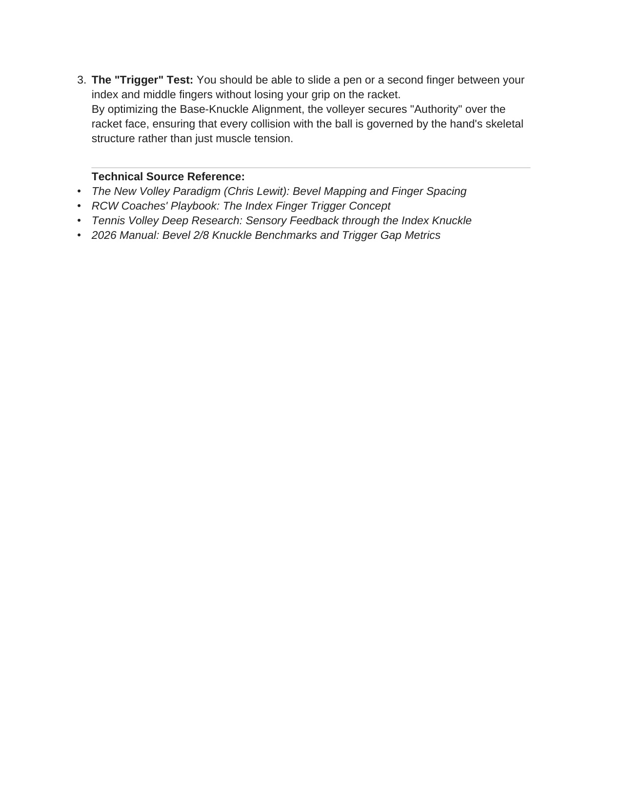
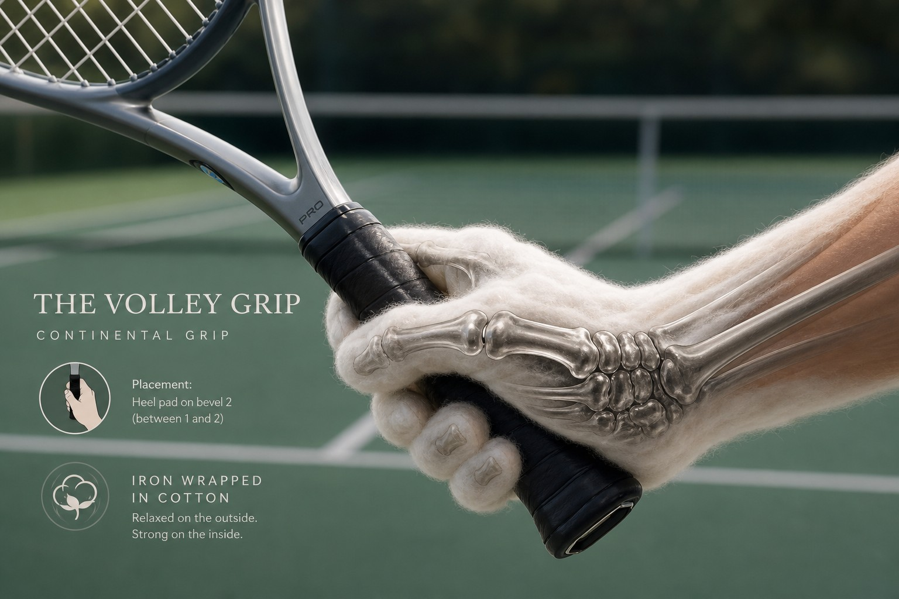
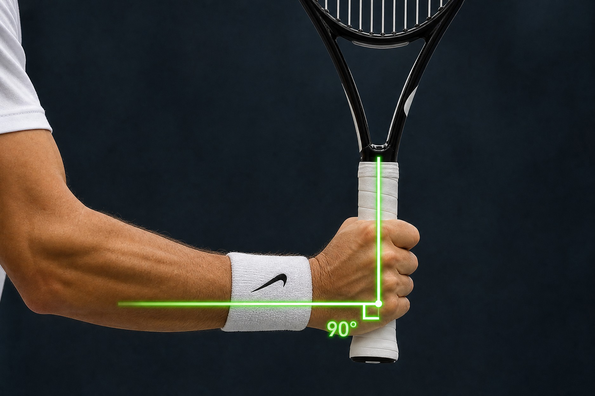
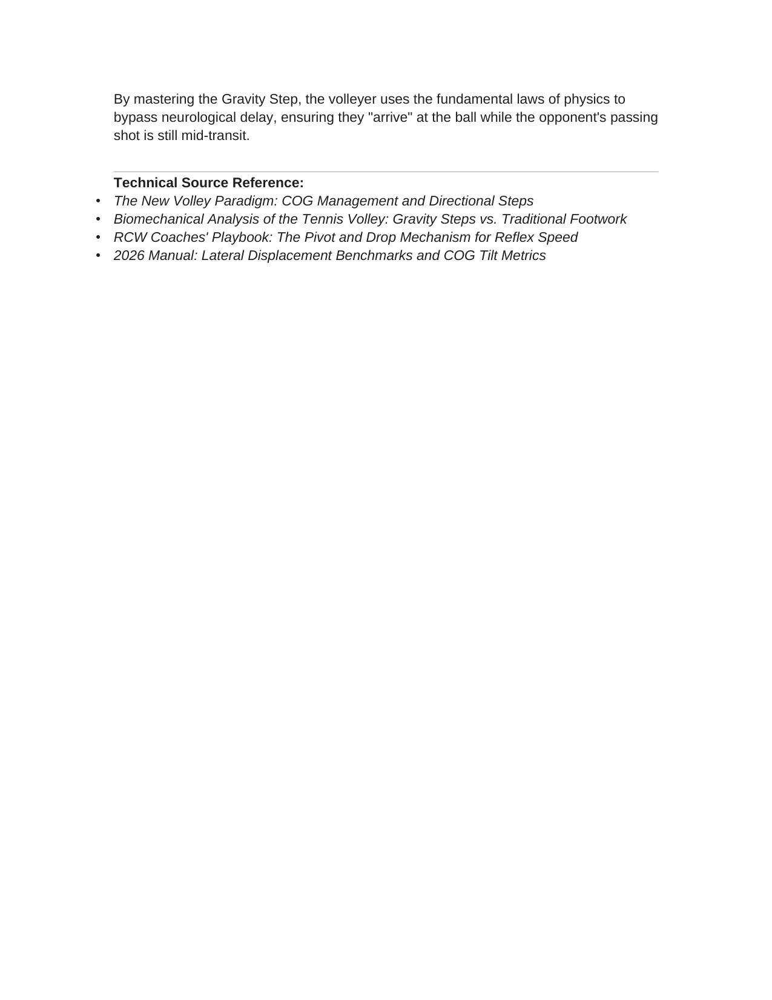
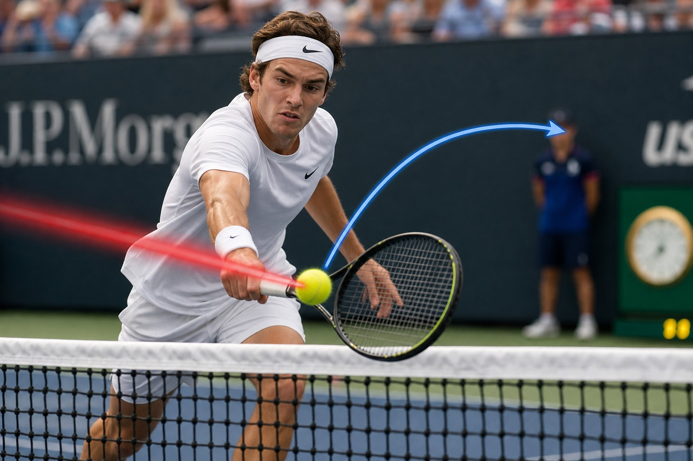
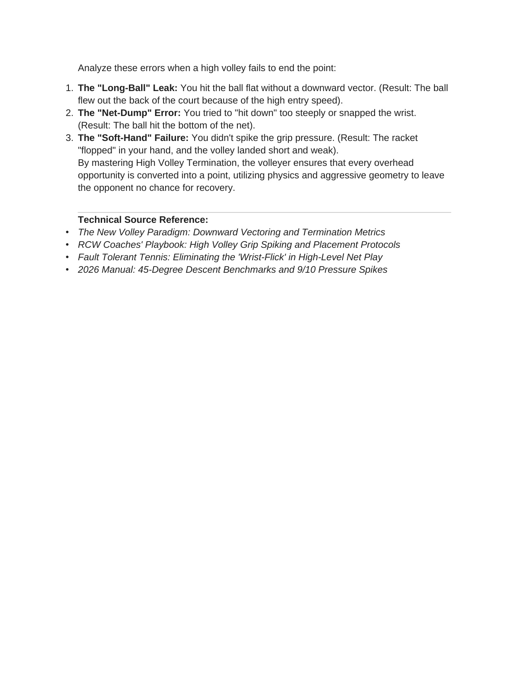

Phần I: Nền Tảng Sinh Cơ Học Lưới Sân & Khái Niệm Bức Tường Tĩnh
Cuộc cách mạng tư duy va chạm 2026: Chuyển hướng phản xạ thay vì vung tay phát lực và triệt tiêu toàn diện các điểm rò rỉ cơ học
1. Chương 1: Chuyển Hướng Động Năng Thay Vì Phát Lực — Bước Chuyển Mình Thời Đại
Trong bối cảnh quần vợt chuyên nghiệp siêu gia tốc năm 2026, cú vô-lê không còn được định nghĩa như một cú đánh vung tay (stroke) truyền thống.
Cú vô-lê hiện đại bản chất là một Sự Kiện Va Chạm (A Collision Event).
Khi tốc độ các đường bóng từ vạch cuối sân của đối thủ liên tục vượt ngưỡng tám mươi đến một trăm dặm một giờ, khoảng thời gian quả bóng bay từ mặt vợt đối phương đến lưới chỉ dao động từ không phẩy hai đến không phẩy ba giây. Ở tốc độ này, mọi nỗ lực lấy đà mở vợt ra sau lưng đều là hành vi tự sát cơ học.
Người chơi lưới hiện đại đã đoạn tuyệt hoàn toàn với mô hình "đấm Bóng tấn công" của thế kỷ hai mươi để chuyển sang mô hình "Phản Xạ Định Hướng" (Directed Reflection) của thế kỷ hai mươi mốt.
Thực tế cơ học theo định luật Newton: một quả bóng tennis nặng năm mươi tám gam lao tới với vận tốc lớn mang trong mình một động lượng khổng lồ. Nhiệm vụ tối thượng của tay vợt trên lưới không phải là cố gắng tạo thêm vận tốc cho quả bóng, mà là dựng lên một cấu trúc hình học kiên cố để hấp thụ, làm chệch hướng và điều phối lại toàn bộ động lượng đó vào phần sân trống hiểm hóc nhất.
2. Khái Niệm "Bức Tường Tĩnh" (The Still-Wall Concept) & Khắc Phục Rò Rỉ Lực
Khái niệm Bức Tường Tĩnh (Still-Wall) đòi hỏi toàn bộ hệ thống cơ học gồm mặt vợt, khớp cổ tay, cẳng tay và khung xương chậu phải khóa chặt thành một khối rắn rỏi không biến dạng tại khoảnh khắc va chạm.
Nghiên cứu cơ sinh học 2026 chỉ ra ba điểm rò rỉ lực kinh điển khiến cú vô-lê bị sụp đổ:
Thứ nhất, rò rỉ khớp vai (The Gate Leak): cánh tay mở rộng vung ngang như một cánh cổng xoay từ khớp vai. Hậu quả là thời điểm tiếp xúc bóng bị trôi dạt ra sau thân người và bạn hoàn toàn mất quyền kiểm soát phương hướng.
Thứ hai, rò rỉ khớp cổ tay (The Wrist Leak): cổ tay bị gập lỏng lẻo về phía trước nhằm cố gắng "trợ lực" cho quả bóng. Hậu quả là mặt vợt bị biến thiên góc độ ngoài ý muốn, bóng bay bổng lơ lửng như một món quà mời gọi đối phương lao vào kết liễu.
Thứ ba, rò rỉ nhóm cơ lõi (The Core Leak): các khối cơ bụng và cơ dựng cột sống bị thả lỏng tại thời Điểm tiếp xúc bóng. Khi quả bóng tốc độ cao đập vào mặt lưới, lực phản hồi dữ dội sẽ đẩy bật cây vợt của bạn lùi về sau, triệt tiêu hoàn toàn sự đầm chắc của cú đánh.
Bằng cách làm chủ Bức Tường Tĩnh, người chơi có thể hóa giải những quả bóng bắn phá uy lực nhất với sự thanh thoát tối đa: đối thủ đánh bóng càng mạnh, cú phản công của bạn càng trở nên sắc bén và chết chóc.

Hình 1: Khóa góc chữ L (L-Shape Lock) kiên cố giữa cẳng tay và thân vợt — Tạo cấu trúc chịu tải hoàn hảo triệt tiêu độ vặn xoắn mặt vợt khi tiếp xúc bóng nặng.

Hình 2: Mô hình cơ học va chạm va chạm Bức Tường Tĩnh (Still-Wall Concept) — chuyển hướng phản xạ động năng bóng 80-100 MPH thông qua Tam Giác Phát Lực kiên cố và khóa cứng nhóm cơ lõi.

Hình 3: Triết lý Thái Cực Quyền trong Vô-Lê hiện đại: "Lý Kính" (Lu Jin) — Mượn lực và chuyển hướng động năng quả bóng thay vì gồng sức phát lực đối kháng.
3. Khóa Khớp Trọng Lực & Triệt Tiêu Độ Trễ Bước Đệm (Latency Leaks)
Một cú vô-lê hoàn hảo bắt đầu từ đôi chân trước khi cánh tay kịp di chuyển một milimet nào.
Nếu bạn liên tục bị muộn bóng trên lưới, hãy nhận diện các điểm nghẽn độ trễ thần kinh:
Lỗi chờ đợi thụ động (Watch and Wait Error): bạn đứng chôn chân nhìn quả bóng bay qua mép lưới rồi mới bắt đầu chuyển động cơ thể. Lúc này quả bóng đã vượt qua tầm với tối ưu của bạn.
Lỗi lệch pha bước đệm (Late Split Delay): bàn chân của bạn vẫn còn đang lơ lửng trên không trung khi đối thủ chạm bóng. Bộ não không thể phát tín hiệu bứt tốc cho đôi chân khi chưa có điểm tựa vững chắc từ mặt đất.
Quy trình chuẩn 2026: bước đệm kích hoạt (Split-Step) phải được tính toán sao cho hai nửa trước bàn chân của bạn chạm đất đúng khoảnh khắc bóng rời mặt dây vợt đối phương. Lực phản hồi từ mặt đất lập tức nạp căng hệ cơ bắp chân và đẩy toàn bộ trọng tâm cơ thể lao chéo về phía trước đón đầu đường bóng.

Hình 9: Khóa vững nhóm cơ cốt lõi (Core Bracing) và chuyển giao động năng tức thì trong pha chặn lưới hiện đại.
Phần II: Giao Diện Vợt, Tam Giác Phát Lực & Kỹ Thuật Đòn Bẩy Đỉnh Cao
Làm chủ kiểu cầm Continental phổ quát, độ siết tăng áp lực đột ngột Grip Spike, cấu trúc Tam Giác Phát Lực và kỹ thuật xử lý vô-lê cao vs thấp
4. Chương 2: Giao Diện Cầm Vợt Phổ Quát & Đột Biến Áp Lực (Grip Spikes)
Trong quần vợt hiện đại, kiểu cầm vợt Continental (khớp gốc ngón trỏ đặt trên cạnh vát số hai của cán vợt) là giao diện bất khả thay thế cho mọi cú vô-lê.
Việc cố gắng thay đổi kiểu cầm sang Eastern hay Semi-Western trên lưới sẽ gây ra độ trễ tai hại khiến mặt vợt không kịp thích ứng trước tốc độ bóng cực hạn.
Bí mật sinh cơ học phân biệt tay vợt nghiệp dư và chuyên gia nằm ở: "Đột Biến Áp Lực Tay Cầm" (The Grip Spike Mechanism).
Giai đoạn chờ đợi và di chuyển: bạn phải duy trì áp lực bàn tay ở mức thư giãn tuyệt đối (khoảng cấp độ 3 trên thang điểm 10). Nếu bạn bóp chặt cán vợt từ trước, toàn bộ các nhóm cơ cánh tay và khớp vai sẽ bị siết cứng, làm chậm tốc độ phản xạ của hệ thần kinh vận động.
Giai đoạn va chạm: đúng năm mili-giây trước khi quả bóng chạm vào mặt dây vợt, các ngón tay (đặc biệt là ba ngón dưới: ngón út, ngón áp út và ngón giữa) lập tức siết chặt bùng nổ lên cấp độ 8 hoặc 9 trên 10.
Cú siết tức thời này biến cây vợt thành một chiếc đe thép kiên cố, truyền toàn bộ phản lực ngược trở lại quả bóng và tạo ra một đường bóng đanh gọn với độ kiểm soát chuẩn xác từng milimet.

Hình 4: Cấu trúc giải phẫu học khớp xương và kiểu cầm Continental (Bevel 2) — Nguyên lý "Trong Nhu Có Cương" (Iron Wrapped in Cotton) hấp thụ xung lực va chạm.
Hình 5: Cảm biến xúc giác ngón tay (Tactile Sensory Feeders) & Cổ vợt — Điểm tiếp nhận phản hồi xúc giác tinh tế và giải tỏa rung chấn va chạm cực hạn.
5. Chương 5: Tam Giác Phát Lực (The Power Triangle) & Điểm Tiếp Xúc Vàng
Cấu trúc Tam Giác Phát Lực được định hình bởi ba đỉnh liên kết: khớp vai, khớp khuỷu tay và khớp cổ tay của tay cầm vợt.
Trong suốt quá trình thực hiện cú vô-lê, hình học của tam giác này phải được duy trì gần như bất biến.
Điểm tiếp xúc bóng lý tưởng luôn nằm ở phía trước ngực và hông trước từ hai mươi lăm đến ba mươi centimet.
Kỹ thuật Vô-lê Trái Tay (The Backhand Volley): hãy luôn "dẫn đầu bằng các đốt ngón tay" (Leading with the Knuckles). Cổ tay hơi nâng nhẹ tạo góc chữ L vững chắc với cẳng tay, mặt sau của bàn tay hướng thẳng về phía mục tiêu. Cánh tay không thuận vung ngược ra sau lưng đồng pha để tạo đối trọng thăng bằng hoàn hảo cho lồng ngực.
Kỹ thuật Vô-lê Thuận Tay (The Forehand Volley): rào cản lớn nhất của người chơi là tật "Cánh Gà" (The Chicken-Wing Leak) — khuỷu tay bị ép dính chặt vào sườn hoặc giật lùi ra sau thân người. Hãy luôn giữ khuỷu tay cách xa cơ thể ít nhất một gang tay, tạo không gian thoáng đãng cho mặt vợt chặn bóng phía trước thân người.
6. Phân Biệt Vô-Lê Cao Dứt Điểm (High Volley) & Vô-Lê Thấp Trung Hòa (Low Volley)
Độ cao của quả bóng so với mép trên của lưới quyết định hoàn toàn phương án xử lý cơ học:
Vô-lê cao dứt điểm (High Volley - bóng nằm trên mép lưới): đây là cơ hội vàng để kết thúc điểm số. Duy trì đầu vợt cao hơn cổ tay, góc vợt hơi úp nhẹ hoặc vuông góc, phối hợp cú siết tay Grip Spike mãnh liệt và bước chân tấn công về phía trước để hướng vector vận tốc cắm thẳng xuống phần sân trống của đối thủ.
Vô-lê thấp trung hòa (Low Volley - bóng nằm sâu dưới mép lưới): đây là tình huống đòi hỏi cảm giác tinh tế và sức mạnh đôi chân tuyệt vời. Tuyệt đối không được gập cong lưng xuống đánh bóng. Bạn bắt buộc phải gập sâu hai khớp gối, hạ thấp trọng tâm mông xuống ngang tầm bóng, giữ thân trên thẳng đứng, mở nhẹ mặt vợt lên trời và êm ái nâng quả bóng bay bổng qua mép lưới với độ xoáy ngược mềm mại.

Hình 6: Phân định hình học lưới — Vô-lê cao phía trên mép lưới tạo vector đè bóng cắm sân; Vô-lê thấp dưới mép lưới đòi hỏi gập sâu gối và nâng đệm bóng qua lưới.

Hình 7: Bước chân trọng lực (The Gravity Step) — Kỹ thuật hạ thấp toàn bộ khung chậu và trọng tâm cơ thể bằng khớp gối để đón bóng thấp dưới mép lưới.

Hình 10: Kỹ thuật Drive Volley tấn công: kiểm soát độ trễ đầu vợt để tạo lực xoáy topspin cực mạnh trên không.
Phần III: Vô-Lê Vung Tay, Phản Xạ Phòng Thủ & Đập Bóng Tấn Công
Nghệ thuật phá vỡ quy tắc với Swinging Volley, kỹ thuật chặn bóng tự vệ cận chiến và cơ học đàn hồi co rút trong cú Smash
7. Vô-Lê Vung Tay (The Swinging Volley) — Khi Nào Được Phép Phá Vỡ Quy Tắc?
Quy tắc vàng của cú vô-lê truyền thống luôn yêu cầu bạn không được vung vợt lấy đà. Tuy nhiên, trong kỷ nguyên quần vợt hiện đại với những tay vợt hàng đầu như Serena Williams, Maria Sharapova hay Carlos Alcaraz, cú vô-lê vung tay (Swinging Volley) đã trở thành một vũ khí sát thương bậc nhất.
Điều kiện tiên quyết để kích hoạt cú swinging volley: quả bóng đối phương trả về là một đường bóng bổng lơ lửng, tốc độ bay chậm và điểm rơi nằm ở khu vực giữa sân (Mid-Court Floater), cao từ ngang ngực đến ngang vai.
Trong tình huống này, nếu bạn chờ bóng rơi xuống để đánh groundstroke, đối thủ sẽ có đủ thời gian Bước hồi vị (recovery step); nếu bạn chỉ bắt một cú vô-lê chặn thông thường, quả bóng sẽ không đủ tốc độ để kết liễu điểm số.
Kỹ thuật thực hiện: sử dụng kiểu cầm thuận tay Semi-Western, xoay nhanh vai mở vợt sớm, hạ thấp đầu vợt và vung hết biên độ từ thấp lên cao như một cú thuận tay cuối sân uy lực ngay trên không trung.
Lực xoáy topspin khủng khiếp sẽ kéo quả bóng cuộn vút qua lưới và cắm sâu vào góc sân với tốc độ không thể chống đỡ.
8. Vô-Lê Phản Xạ Phòng Thủ (Defensive Reflex Volleys) — Khối Chặn Tối Giản
Khi bạn đứng cách lưới hai mét và đối thủ tung ra một cú đánh bắn thẳng vào ngực hoặc mặt bạn (Body Shot) với tốc độ một trăm dặm một giờ, bạn không có thời gian để bước chân hay xoay vai.
Đây là lúc kỹ thuật Chặn Tối Giản (The Minimalist Block) phát huy tác dụng sống còn:
Thứ nhất, phản xạ bảo vệ khuôn mặt: tự động ưu tiên sử dụng mặt vợt trái tay (Backhand Face) vì chuyển động của khuỷu tay và cẳng tay bên cánh trái tay linh hoạt hơn nhiều khi che chắn cho vùng đầu và ngực.
Thứ hai, khóa chặt khớp cổ tay và khuỷu tay: không có bất kỳ chuyển động đẩy vợt nào ra trước. Cây vợt đóng vai trò như một chiếc khiên chắn kiên cố, để quả bóng tự bật ra khỏi mặt dây nhờ chính động năng của nó.
Thứ ba, hấp thụ xung lực: hơi chùng nhẹ khớp khuỷu tay một vài centimet tại khoảnh khắc va chạm nếu bạn muốn thực hiện một cú bỏ nhỏ ngẫu hứng (Drop Volley) khiến quả bóng rơi lững lờ ngay sát mép lưới đối phương.

Hình 8: Khối chặn tối giản "Less is More" — Phản xạ phòng thủ tốc độ cực hạn, triệt tiêu mọi chuyển động vung vợt thừa khi bảo vệ thân người trước bóng 100mph.
9. Chương 6: Cú Đập Bóng Trên Cao (The Overhead Smash) & Chuỗi Đàn Hồi Co Rút
Cú smash trên lưới là cú đánh chấm dứt điểm số dứt khoát nhất trong quần vợt, được xây dựng dựa trên nguyên lý đàn hồi co rút (Elastic Recoil) của toàn bộ cơ thể.
Chuỗi chuyển động ba giai đoạn:
Giai đoạn định vị: ngay khoảnh khắc đối thủ tung ra cú lốp bóng, hãy xoay nghiêng người sang một bên, tay không thuận giơ cao chỉ thẳng lên trời để khóa chặt quỹ đạo quả bóng trên nền trời, di chuyển lùi bằng các bước chân cắt kéo (Scrossover Steps) để luôn giữ quả bóng ở phía trước mắt.
Giai đoạn tích lũy năng lượng: nhún sâu hai đầu gối, hạ đầu vợt rơi xuống sau lưng trong tư thế gãi lưng, uốn cong cột sống tạo thành một cánh cung đàn hồi căng tràn sức mạnh.
Giai đoạn giải phóng: bật nhảy lên không trung bằng cả hai chân (hoặc sử dụng bước nhảy Scissor Kick), vươn cao tối đa cánh tay đập bóng ở điểm tiếp xúc cao nhất, đồng thời cẳng tay xoay sấp mãnh liệt (Pronation) đè quả bóng găm thẳng xuống sân với sự áp đảo tuyệt đối.

Hình 11: Cơ chế cảm giác bóng (Touch Absorption): thả lỏng cổ tay đúng vi giây để triệt tiêu hoàn toàn tốc độ bóng rơi sát lưới.
Phần IV: Hình Học Sân Đấu, Sổ Tay Bắt Lỗi & Bản Lĩnh Thần Kinh
Chiến thuật phong tỏa không gian lưới 2026, quy trình chẩn đoán sửa lỗi thực chiến và kích hoạt bản lĩnh thần kinh đỉnh cao
10. Chương 7: Hình Học Thống Trị Lưới Sân 2026 & Các Mô Thức Tác Chiến
Khả năng thống trị lưới sân trong quần vợt đỉnh cao không phụ thuộc vào việc bạn chạy nhanh bao nhiêu, mà phụ thuộc vào việc bạn chiếm lĩnh các góc hình học chuẩn xác đến mức nào.
Khoảng cách vàng: vị trí đứng lý tưởng của tay vợt lưới là cách mép lưới từ hai đến hai phẩy năm mét. Đứng quá gần lưới (dưới một mét rưỡi) sẽ khiến bạn trở thành mồi ngon cho những cú lốp bóng qua đầu; đứng quá xa lưới (trên ba mét rưỡi) sẽ khiến quả bóng rơi xuống sâu dưới tầm chân và buộc bạn phải xử lý những cú vô-lê thấp đầy rủi ro.
Quy luật cắt góc di chuyển hình chữ V (The V-Cut Geometry): đừng bao giờ di chuyển ngang song song với mép lưới để đón bóng. Hãy luôn di chuyển theo đường chéo hướng về phía trước tạo thành góc chữ V nhọn tiến về phía tâm bóng. Động tác lao chéo về phía trước giúp bạn cướp bóng ở độ cao tối đa phía trên mép lưới và mượn toàn bộ đà tiến của cơ thể để đè bẹp đường bóng.
Mô thức phong tỏa đường chuyền: luôn ưu tiên bịt kín góc đánh dọc dây của đối thủ trước, buộc họ phải mạo hiểm đánh bóng chéo sân qua phần lưới cao nhất và mở ra cơ hội bắt bài (Poaching) dứt điểm cho bạn.
11. Chương 8: Sổ Tay Bắt Lỗi Kỹ Thuật Thực Chiến (Diagnostic Manual)
Khi cú vô-lê của bạn gặp trục trặc trong các trận đấu căng thẳng, hãy lập tức áp dụng quy trình chẩn đoán bốn bước:
Lỗi một: Cú vô-lê liên tục bay bổng lơ lửng cho đối phương lao vào phản công.
Chẩn đoán: Khớp cổ tay bị lỏng lẻo gập về phía trước tại điểm tiếp xúc (The Wrist Leak) hoặc khuỷu tay bị giật lùi ra sau thân người. Hãy khóa cứng góc cổ tay chữ L và đẩy điểm tiếp xúc ra phía trước ngực thêm hai mươi centimet.
Lỗi hai: Cú vô-lê rúc thẳng vào chân lưới.
Chẩn đoán: Bạn đang vung vợt chém mạnh từ trên cao xuống dưới hoặc đứng thẳng lưng khi xử lý bóng thấp. Hãy gập sâu hai đầu gối, hạ thấp hông và để mặt vợt nâng nhẹ quả bóng bay qua mép lưới.
Lỗi ba: Cú đánh trúng vào vành khung vợt hoặc bị rung lắc lệch tâm.
Chẩn đoán: Mắt bạn đã rời khỏi quả bóng để ngắm nhìn sân đối phương trước khi bóng tiếp xúc vào mặt dây. Hãy giữ đầu và tầm nhìn cố định tại Điểm tiếp xúc bóng cho đến khi cảm nhận rõ tiếng nổ đanh của quả bóng rời đi.
12. Chương 9: Bản Lĩnh Thần Kinh & Trạng Thái Dòng Chảy Trên Lưới
Lưới sân là đấu trường thử thách hệ thần kinh dữ dội nhất trong thể thao. Ở cự ly gần đối mặt với những đường bóng sấm sét, phản xạ sinh tồn tự nhiên của con người là giật mình chớp mắt, co rúm cơ bắp hoặc quay mặt né tránh.
Để trở thành một sát thủ trên lưới, bạn phải rèn luyện bản lĩnh thần kinh ở cấp độ tiềm thức:
Kích hoạt tầm nhìn ngoại vi rộng mở: đừng nhìn chằm chằm một cách căng thẳng vào cây vợt của đối phương. Hãy mở rộng tầm nhìn để thu nhận toàn bộ bức tranh chuyển động cơ thể của họ. Hệ thống thị giác ngoại vi truyền tín hiệu tới não bộ nhanh hơn hệ thống thị giác tập trung tới ba mươi phần trăm.
Giải phóng hơi thở: thở ra dứt khoát bằng miệng đúng khoảnh khắc va chạm bóng để kích hoạt hệ thần kinh phó giao cảm, giải phóng toàn bộ sự căng cứng khỏi cơ bắp và duy trì sự nhịp nhàng thanh thoát.
Duy trì tinh thần săn mồi chủ động: hãy bước lên lưới với tâm thế của một kẻ đi săn chứ không phải một con mồi đang chịu trận. Khi bạn khao khát quả bóng bay về phía mình với sự tự tin sắt đá, lưới sân sẽ biến thành lãnh địa bất khả xâm phạm của riêng bạn!